第二周：机器学习策略（2）(ML Strategy (2))
第二周：机器学习策略（2）(ML Strategy (2))2.1 进行误差分析（Carrying out error analysis）2.2 清除标注错误的数据（Cleaning up Incorrectly labeled data）2.3 快速搭建你的第一个系统，并进行迭代（Build your first system quickly, then iterate）2.4 使用来自不同分布的数据，进行训练和测试（Training and testing on different distributions）2.5 数据分布不匹配时，偏差与方差的分析（Bias and Variance with mismatched data distributions）2.6 处理数据不匹配问题（Addressing data mismatch）2.7 迁移学习（Transfer learning）2.8 多任务学习（Multi-task learning）2.9 什么是端到端的深度学习？（What is end-to-end deep learning?）2.10 是否要使用端到端的深度学习？（Whether to use end-to-end learning?）
2.1 进行误差分析（Carrying out error analysis）
你好，欢迎回来，如果你希望让学习算法能够胜任人类能做的任务，但你的学习算法还没有达到人类的表现，那么人工检查一下你的算法犯的错误也许可以让你了解接下来应该做什么。这个过程称为错误分析，我们从一个例子开始讲吧。
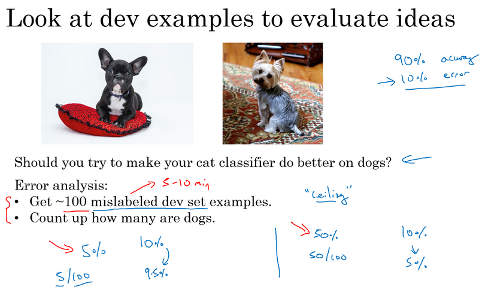
假设你正在调试猫分类器，然后你取得了90%准确率，相当于10%错误，，在你的开发集上做到这样，这离你希望的目标还有很远。也许你的队员看了一下算法分类出错的例子，注意到算法将一些狗分类为猫，你看看这两只狗，它们看起来是有点像猫，至少乍一看是。所以也许你的队友给你一个建议，如何针对狗的图片优化算法。试想一下，你可以针对狗，收集更多的狗图，或者设计一些只处理狗的算法功能之类的，为了让你的猫分类器在狗图上做的更好，让算法不再将狗分类成猫。所以问题在于，你是不是应该去开始做一个项目专门处理狗？这项目可能需要花费几个月的时间才能让算法在狗图片上犯更少的错误，这样做值得吗？或者与其花几个月做这个项目，有可能最后发现这样一点用都没有。这里有个错误分析流程，可以让你很快知道这个方向是否值得努力。
这是我建议你做的，首先，收集一下，比如说100个错误标记的开发集样本，然后手动检查，一次只看一个，看看你的开发集里有多少错误标记的样本是狗。现在，假设事实上，你的100个错误标记样本中只有5%是狗，就是说在100个错误标记的开发集样本中，有5个是狗。这意味着100个样本，在典型的100个出错样本中，即使你完全解决了狗的问题，你也只能修正这100个错误中的5个。或者换句话说，如果只有5%的错误是狗图片，那么如果你在狗的问题上花了很多时间，那么你最多只能希望你的错误率从10%下降到9.5%，对吧？错误率相对下降了5%（总体下降了0.5%，100的错误样本，错误率为10%，则样本为1000），那就是10%下降到9.5%。你就可以确定这样花时间不好，或者也许应该花时间，但至少这个分析给出了一个上限。如果你继续处理狗的问题，能够改善算法性能的上限，对吧？在机器学习中，有时我们称之为性能上限，就意味着，最好能到哪里，完全解决狗的问题可以对你有多少帮助。
但现在，假设发生了另一件事，假设我们观察一下这100个错误标记的开发集样本，你发现实际有50张图都是狗，所以有50%都是狗的照片，现在花时间去解决狗的问题可能效果就很好。这种情况下，如果你真的解决了狗的问题，那么你的错误率可能就从10%下降到5%了。然后你可能觉得让错误率减半的方向值得一试，可以集中精力减少错误标记的狗图的问题。
我知道在机器学习中，有时候我们很鄙视手工操作，或者使用了太多人为数值。但如果你要搭建应用系统，那这个简单的人工统计步骤，错误分析，可以节省大量时间，可以迅速决定什么是最重要的，或者最有希望的方向。实际上，如果你观察100个错误标记的开发集样本，也许只需要5到10分钟的时间，亲自看看这100个样本，并亲自统计一下有多少是狗。根据结果，看看有没有占到5%、50%或者其他东西。这个在5到10分钟之内就能给你估计这个方向有多少价值，并且可以帮助你做出更好的决定，是不是把未来几个月的时间投入到解决错误标记的狗图这个问题。
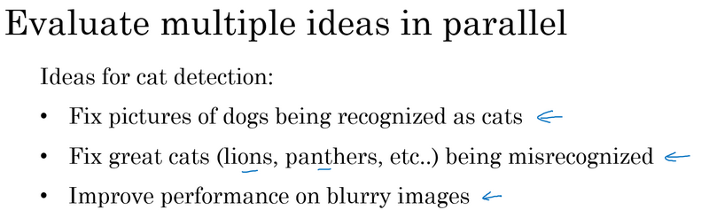
在本幻灯片中，我们要描述一下如何使用错误分析来评估某个想法，这个样本里狗的问题是否值得解决。有时你在做错误分析时，也可以同时并行评估几个想法，比如，你有几个改善猫检测器的想法，也许你可以改善针对狗图的性能，或者有时候要注意，那些猫科动物，如狮子，豹，猎豹等等，它们经常被分类成小猫或者家猫，所以你也许可以想办法解决这个错误。或者也许你发现有些图像是模糊的，如果你能设计出一些系统，能够更好地处理模糊图像。也许你有些想法，知道大概怎么处理这些问题，要进行错误分析来评估这三个想法。
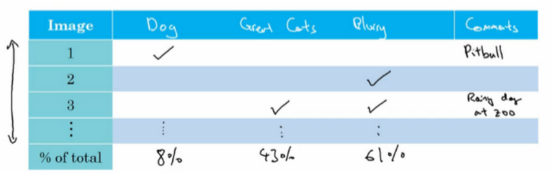
我会做的是建立这样一个表格，我通常用电子表格来做，但普通文本文件也可以。在最左边，人工过一遍你想分析的图像集，所以图像可能是从1到100，如果你观察100张图的话。电子表格的一列就对应你要评估的想法，所以狗的问题，猫科动物的问题，模糊图像的问题，我通常也在电子表格中留下空位来写评论。所以记住，在错误分析过程中，你就看看算法识别错误的开发集样本，如果你发现第一张识别错误的图片是狗图，那么我就在那里打个勾，为了帮我自己记住这些图片，有时我会在评论里注释，也许这是一张比特犬的图。如果第二张照片很模糊，也记一下。如果第三张是在下雨天动物园里的狮子，被识别成猫了，这是大型猫科动物，还有图片模糊，在评论部分写动物园下雨天，是雨天让图像模糊的之类的。最后，这组图像过了一遍之后，我可以统计这些算法(错误)的百分比，或者这里每个错误类型的百分比，有多少是狗，大猫或模糊这些错误类型。所以也许你检查的图像中8%是狗，可能43%属于大猫，61%属于模糊。这意味着扫过每一列，并统计那一列有多少百分比图像打了勾。
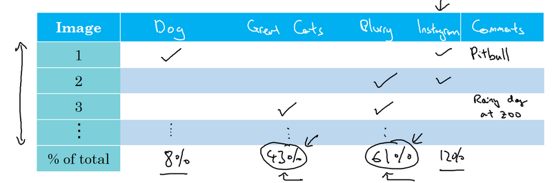
在这个步骤做到一半时，有时你可能会发现其他错误类型，比如说你可能发现有Instagram滤镜，那些花哨的图像滤镜，干扰了你的分类器。在这种情况下，实际上可以在错误分析途中，增加这样一列，比如多色滤镜 Instagram滤镜和Snapchat滤镜，然后再过一遍，也统计一下那些问题，并确定这个新的错误类型占了多少百分比，这个分析步骤的结果可以给出一个估计，是否值得去处理每个不同的错误类型。
例如，在这个样本中，有很多错误来自模糊图片，也有很多错误类型是大猫图片。所以这个分析的结果不是说你一定要处理模糊图片，这个分析没有给你一个严格的数学公式，告诉你应该做什么，但它能让你对应该选择那些手段有个概念。它也告诉你，比如说不管你对狗图片或者Instagram图片处理得有多好，在这些例子中，你最多只能取得8%或者12%的性能提升。而在大猫图片这一类型，你可以做得更好。或者模糊图像，这些类型有改进的潜力。这些类型里，性能提高的上限空间要大得多。所以取决于你有多少改善性能的想法，比如改善大猫图片或者模糊图片的表现。也许你可以选择其中两个，或者你的团队成员足够多，也许你把团队可以分成两个团队，其中一个想办法改善大猫的识别，另一个团队想办法改善模糊图片的识别。但这个快速统计的步骤，你可以经常做，最多需要几小时，就可以真正帮你选出高优先级任务，并了解每种手段对性能有多大提升空间。
所以总结一下，进行错误分析，你应该找一组错误样本，可能在你的开发集里或者测试集里，观察错误标记的样本，看看假阳性（false positives）和假阴性（false negatives），统计属于不同错误类型的错误数量。在这个过程中，你可能会得到启发，归纳出新的错误类型，就像我们看到的那样。如果你过了一遍错误样本，然后说，天，有这么多Instagram滤镜或Snapchat滤镜，这些滤镜干扰了我的分类器，你就可以在途中新建一个错误类型。总之，通过统计不同错误标记类型占总数的百分比，可以帮你发现哪些问题需要优先解决，或者给你构思新优化方向的灵感。在做错误分析的时候，有时你会注意到开发集里有些样本被错误标记了，这时应该怎么做呢？我们下一个视频来讨论。
2.2 清除标注错误的数据（Cleaning up Incorrectly labeled data）
你的监督学习问题的数据由输入和输出标签 构成，如果你观察一下你的数据，并发现有些输出标签 是错的。你的数据有些标签是错的，是否值得花时间去修正这些标签呢？
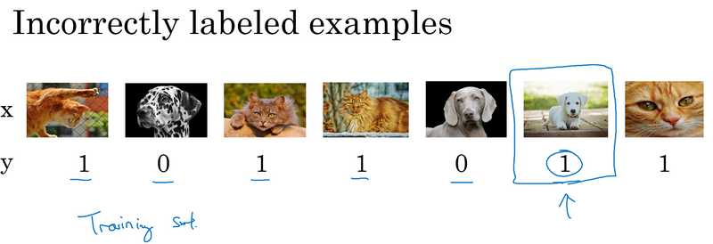
我们看看在猫分类问题中，图片是猫，；不是猫，。所以假设你看了一些数据样本，发现这（倒数第二张图片）其实不是猫，所以这是标记错误的样本。我用了这个词，“标记错误的样本”来表示你的学习算法输出了错误的 值。但我要说的是，对于标记错误的样本，参考你的数据集，在训练集或者测试集 的标签，人类给这部分数据加的标签，实际上是错的，这实际上是一只狗，所以 其实应该是0，也许做标记的那人疏忽了。如果你发现你的数据有一些标记错误的样本，你该怎么办？
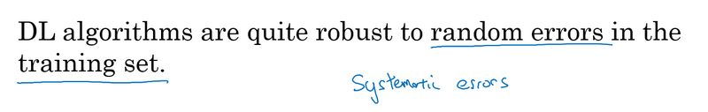
首先，我们来考虑训练集，事实证明，深度学习算法对于训练集中的随机错误是相当健壮的（robust）。只要你的标记出错的样本，只要这些错误样本离随机错误不太远，有时可能做标记的人没有注意或者不小心，按错键了，如果错误足够随机，那么放着这些错误不管可能也没问题，而不要花太多时间修复它们。
当然你浏览一下训练集，检查一下这些标签，并修正它们也没什么害处。有时候修正这些错误是有价值的，有时候放着不管也可以，只要总数据集总足够大，实际错误率可能不会太高。我见过一大批机器学习算法训练的时候，明知训练集里有个错误标签，但最后训练出来也没问题。
我这里先警告一下，深度学习算法对随机误差很健壮，但对系统性的错误就没那么健壮了。所以比如说，如果做标记的人一直把白色的狗标记成猫，那就成问题了。因为你的分类器学习之后，会把所有白色的狗都分类为猫。但随机错误或近似随机错误，对于大多数深度学习算法来说不成问题。
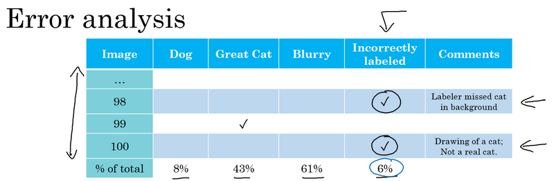
现在，之前的讨论集中在训练集中的标记出错的样本，那么如果是开发集和测试集中有这些标记出错的样本呢？如果你担心开发集或测试集上标记出错的样本带来的影响，他们一般建议你在错误分析时，添加一个额外的列，这样你也可以统计标签 错误的样本数。所以比如说，也许你统计一下对100个标记出错的样本的影响，所以你会找到100个样本，其中你的分类器的输出和开发集的标签不一致，有时对于其中的少数样本，你的分类器输出和标签不同，是因为标签错了，而不是你的分类器出错。所以也许在这个样本中，你发现标记的人漏了背景里的一只猫，所以那里打个勾，来表示样本98标签出错了。也许这张图实际上是猫的画，而不是一只真正的猫，也许你希望标记数据的人将它标记为，而不是 ，然后再在那里打个勾。当你统计出其他错误类型的百分比后，就像我们在之前的视频中看到的那样，你还可以统计因为标签错误所占的百分比，你的开发集里的 值是错的，这就解释了为什么你的学习算法做出和数据集里的标记不一样的预测1。
所以现在问题是，是否值得修正这6%标记出错的样本，我的建议是，如果这些标记错误严重影响了你在开发集上评估算法的能力，那么就应该去花时间修正错误的标签。但是，如果它们没有严重影响到你用开发集评估成本偏差的能力，那么可能就不应该花宝贵的时间去处理。
我给你看一个样本，解释清楚我的意思。所以我建议你看3个数字来确定是否值得去人工修正标记出错的数据，我建议你看看整体的开发集错误率，在我们以前的视频中的样本，我们说也许我们的系统达到了90%整体准确度，所以有10%错误率，那么你应该看看错误标记引起的错误的数量或者百分比。所以在这种情况下，6％的错误来自标记出错，所以10%的6%就是0.6%。也许你应该看看其他原因导致的错误，如果你的开发集上有10%错误，其中0.6%是因为标记出错，剩下的占9.4%，是其他原因导致的，比如把狗误认为猫，大猫图片。所以在这种情况下，我说有9.4%错误率需要集中精力修正，而标记出错导致的错误是总体错误的一小部分而已，所以如果你一定要这么做，你也可以手工修正各种错误标签，但也许这不是当下最重要的任务。
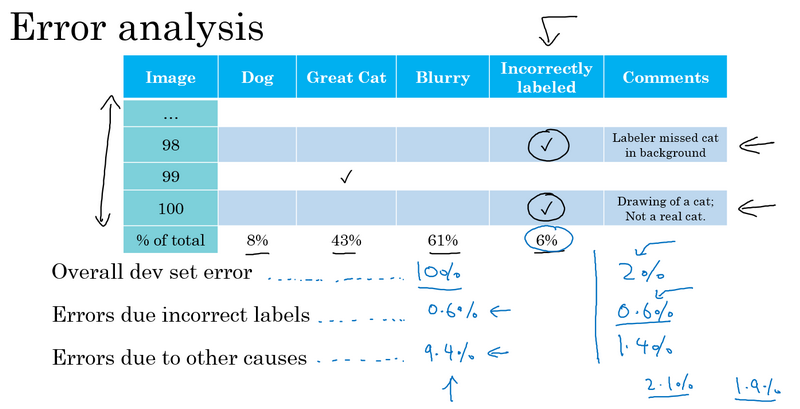
我们再看另一个样本，假设你在学习问题上取得了很大进展，所以现在错误率不再是10%了，假设你把错误率降到了2％，但总体错误中的0.6%还是标记出错导致的。所以现在，如果你想检查一组标记出错的开发集图片，开发集数据有2%标记错误了，那么其中很大一部分，0.6%除以2%，实际上变成30%标签而不是6%标签了。有那么多错误样本其实是因为标记出错导致的，所以现在其他原因导致的错误是1.4%。当测得的那么大一部分的错误都是开发集标记出错导致的，那似乎修正开发集里的错误标签似乎更有价值。
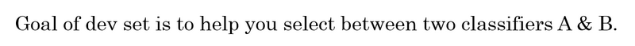
如果你还记得设立开发集的目标的话，开发集的主要目的是，你希望用它来从两个分类器和中选择一个。所以当你测试两个分类器和时，在开发集上一个有2.1%错误率，另一个有1.9%错误率，但是你不能再信任开发集了，因为它无法告诉你这个分类器是否比这个好，因为0.6%的错误率是标记出错导致的。那么现在你就有很好的理由去修正开发集里的错误标签，因为在右边这个样本中，标记出错对算法错误的整体评估标准有严重的影响。而左边的样本中，标记出错对你算法影响的百分比还是相对较小的。
现在如果你决定要去修正开发集数据，手动重新检查标签，并尝试修正一些标签，这里还有一些额外的方针和原则需要考虑。首先，我鼓励你不管用什么修正手段，都要同时作用到开发集和测试集上，我们之前讨论过为什么，开发和测试集必须来自相同的分布。开发集确定了你的目标，当你击中目标后，你希望算法能够推广到测试集上，这样你的团队能够更高效的在来自同一分布的开发集和测试集上迭代。如果你打算修正开发集上的部分数据，那么最好也对测试集做同样的修正以确保它们继续来自相同的分布。所以我们雇佣了一个人来仔细检查这些标签，但必须同时检查开发集和测试集。
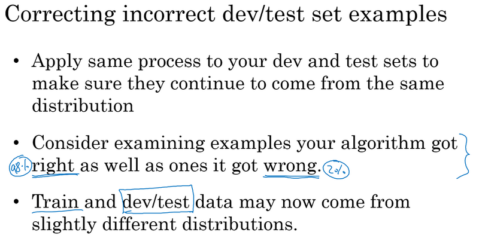
其次，我强烈建议你要考虑同时检验算法判断正确和判断错误的样本，要检查算法出错的样本很容易，只需要看看那些样本是否需要修正，但还有可能有些样本算法判断正确，那些也需要修正。如果你只修正算法出错的样本，你对算法的偏差估计可能会变大，这会让你的算法有一点不公平的优势，我们就需要再次检查出错的样本，但也需要再次检查做对的样本，因为算法有可能因为运气好把某个东西判断对了。在那个特例里，修正那些标签可能会让算法从判断对变成判断错。这第二点不是很容易做，所以通常不会这么做。通常不会这么做的原因是，如果你的分类器很准确，那么判断错的次数比判断正确的次数要少得多。那么就有2%出错，98%都是对的，所以更容易检查2%数据上的标签，然而检查98%数据上的标签要花的时间长得多，所以通常不这么做，但也是要考虑到的。
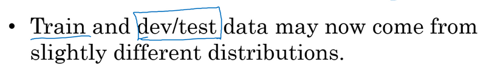
最后，如果你进入到一个开发集和测试集去修正这里的部分标签，你可能会，也可能不会去对训练集做同样的事情，还记得我们在其他视频里讲过，修正训练集中的标签其实相对没那么重要，你可能决定只修正开发集和测试集中的标签，因为它们通常比训练集小得多，你可能不想把所有额外的精力投入到修正大得多的训练集中的标签，所以这样其实是可以的。我们将在本周晚些时候讨论一些步骤，用于处理你的训练数据分布和开发与测试数据不同的情况，对于这种情况学习算法其实相当健壮，你的开发集和测试集来自同一分布非常重要。但如果你的训练集来自稍微不同的分布，通常这是一件很合理的事情，我会在本周晚些时候谈谈如何处理这个问题。
最后我讲几个建议：
首先，深度学习研究人员有时会喜欢这样说：“我只是把数据提供给算法，我训练过了，效果拔群”。这话说出了很多深度学习错误的真相，更多时候，我们把数据喂给算法，然后训练它，并减少人工干预，减少使用人类的见解。但我认为，在构造实际系统时，通常需要更多的人工错误分析，更多的人类见解来架构这些系统，尽管深度学习的研究人员不愿意承认这点。
其次，不知道为什么，我看一些工程师和研究人员不愿意亲自去看这些样本，也许做这些事情很无聊，坐下来看100或几百个样本来统计错误数量，但我经常亲自这么做。当我带领一个机器学习团队时，我想知道它所犯的错误，我会亲自去看看这些数据，尝试和一部分错误作斗争。我想就因为花了这几分钟，或者几个小时去亲自统计数据，真的可以帮你找到需要优先处理的任务，我发现花时间亲自检查数据非常值得，所以我强烈建议你们这样做，如果你在搭建你的机器学习系统的话，然后你想确定应该优先尝试哪些想法，或者哪些方向。
这就是错误分析过程，在下一个视频中，我想分享一下错误分析是如何在启动新的机器学习项目中发挥作用的。
2.3 快速搭建你的第一个系统，并进行迭代（Build your first system quickly, then iterate）
如果你正在开发全新的机器学习应用，我通常会给你这样的建议，你应该尽快建立你的第一个系统原型，然后快速迭代。
让我告诉你我的意思，我在语音识别领域研究了很多年，如果你正在考虑建立一个新的语音识别系统，其实你可以走很多方向，可以优先考虑很多事情。
比如，有一些特定的技术，可以让语音识别系统对嘈杂的背景更加健壮，嘈杂的背景可能是说咖啡店的噪音，背景里有很多人在聊天，或者车辆的噪音，高速上汽车的噪音或者其他类型的噪音。有一些方法可以让语音识别系统在处理带口音时更健壮，还有特定的问题和麦克风与说话人距离很远有关，就是所谓的远场语音识别。儿童的语音识别带来特殊的挑战，挑战来自单词发音方面，还有他们选择的词汇，他们倾向于使用的词汇。还有比如说，说话人口吃，或者说了很多无意义的短语，比如“哦”，“啊”之类的。你可以选择很多不同的技术，让你听写下来的文本可读性更强，所以你可以做很多事情来改进语音识别系统。
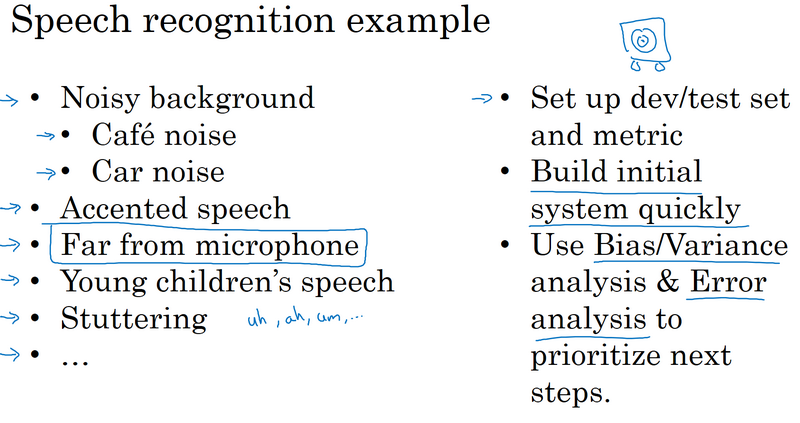
一般来说，对于几乎所有的机器学习程序可能会有50个不同的方向可以前进，并且每个方向都是相对合理的可以改善你的系统。但挑战在于，你如何选择一个方向集中精力处理。即使我已经在语音识别领域工作多年了，如果我要为一个新应用程序域构建新系统，我还是觉得很难不花时间去思考这个问题就直接选择方向。所以我建议你们，如果你想搭建全新的机器学习程序，就是快速搭好你的第一个系统，然后开始迭代。我的意思是我建议你快速设立开发集和测试集还有指标，这样就决定了你的目标所在，如果你的目标定错了，之后改也是可以的。但一定要设立某个目标，然后我建议你马上搭好一个机器学习系统原型，然后找到训练集，训练一下，看看效果，开始理解你的算法表现如何，在开发集测试集，你的评估指标上表现如何。当你建立第一个系统后，你就可以马上用到之前说的偏差方差分析，还有之前最后几个视频讨论的错误分析，来确定下一步优先做什么。特别是如果错误分析让你了解到大部分的错误的来源是说话人远离麦克风，这对语音识别构成特殊挑战，那么你就有很好的理由去集中精力研究这些技术，所谓远场语音识别的技术，这基本上就是处理说话人离麦克风很远的情况。
建立这个初始系统的所有意义在于，它可以是一个快速和粗糙的实现（quick and dirty implementation），你知道的，别想太多。初始系统的全部意义在于，有一个学习过的系统，有一个训练过的系统，让你确定偏差方差的范围，就可以知道下一步应该优先做什么，让你能够进行错误分析，可以观察一些错误，然后想出所有能走的方向，哪些是实际上最有希望的方向。
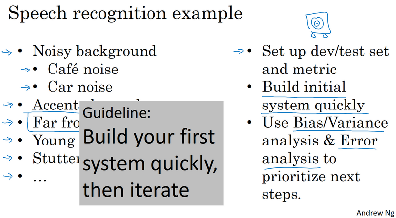
所以回顾一下，我建议你们快速建立你的第一个系统，然后迭代。不过如果你在这个应用程序领域有很多经验，这个建议适用程度要低一些。还有一种情况适应程度更低，当这个领域有很多可以借鉴的学术文献，处理的问题和你要解决的几乎完全相同，所以，比如说，人脸识别就有很多学术文献，如果你尝试搭建一个人脸识别设备，那么可以从现有大量学术文献为基础出发，一开始就搭建比较复杂的系统。但如果你第一次处理某个新问题，那我真的不鼓励你想太多，或者把第一个系统弄得太复杂。我建议你们构建一些快速而粗糙的实现，然后用来帮你找到改善系统要优先处理的方向。我见过很多机器学习项目，我觉得有些团队的解决方案想太多了，他们造出了过于复杂的系统。我也见过有限团队想的不够，然后造出过于简单的系统。平均来说，我见到更多的团队想太多，构建太复杂的系统。
所以我希望这些策略有帮助，如果你将机器学习算法应用到新的应用程序里，你的主要目标是弄出能用的系统，你的主要目标并不是发明全新的机器学习算法，这是完全不同的目标，那时你的目标应该是想出某种效果非常好的算法。所以我鼓励你们搭建快速而粗糙的实现，然后用它做偏差/方差分析，用它做错误分析，然后用分析结果确定下一步优先要做的方向。
2.4 使用来自不同分布的数据，进行训练和测试（Training and testing on different distributions）
深度学习算法对训练数据的胃口很大，当你收集到足够多带标签的数据构成训练集时，算法效果最好，这导致很多团队用尽一切办法收集数据，然后把它们堆到训练集里，让训练的数据量更大，即使有些数据，甚至是大部分数据都来自和开发集、测试集不同的分布。在深度学习时代，越来越多的团队都用来自和开发集、测试集分布不同的数据来训练，这里有一些微妙的地方，一些最佳做法来处理训练集和测试集存在差异的情况，我们来看看。
假设你在开发一个手机应用，用户会上传他们用手机拍摄的照片，你想识别用户从应用中上传的图片是不是猫。现在你有两个数据来源，一个是你真正关心的数据分布，来自应用上传的数据，比如右边的应用，这些照片一般更业余，取景不太好，有些甚至很模糊，因为它们都是业余用户拍的。另一个数据来源就是你可以用爬虫程序挖掘网页直接下载，就这个样本而言，可以下载很多取景专业、高分辨率、拍摄专业的猫图片。如果你的应用用户数还不多，也许你只收集到10,000张用户上传的照片，但通过爬虫挖掘网页，你可以下载到海量猫图，也许你从互联网上下载了超过20万张猫图。而你真正关心的算法表现是你的最终系统处理来自应用程序的这个图片分布时效果好不好，因为最后你的用户会上传类似右边这些图片，你的分类器必须在这个任务中表现良好。现在你就陷入困境了，因为你有一个相对小的数据集，只有10,000个样本来自那个分布，而你还有一个大得多的数据集来自另一个分布，图片的外观和你真正想要处理的并不一样。但你又不想直接用这10,000张图片，因为这样你的训练集就太小了，使用这20万张图片似乎有帮助。但是，困境在于，这20万张图片并不完全来自你想要的分布，那么你可以怎么做呢？
这里有一种选择，你可以做的一件事是将两组数据合并在一起，这样你就有21万张照片，你可以把这21万张照片随机分配到训练、开发和测试集中。为了说明观点，我们假设你已经确定开发集和测试集各包含2500个样本，所以你的训练集有205000个样本。现在这么设立你的数据集有一些好处，也有坏处。好处在于，你的训练集、开发集和测试集都来自同一分布，这样更好管理。但坏处在于，这坏处还不小，就是如果你观察开发集，看看这2500个样本其中很多图片都来自网页下载的图片，那并不是你真正关心的数据分布，你真正要处理的是来自手机的图片。

所以结果你的数据总量，这200,000个样本，我就用缩写表示，我把那些是从网页下载的数据总量写成，所以对于这2500个样本，数学期望值是：，有2381张图来自网页下载，这是期望值，确切数目会变化，取决于具体的随机分配操作。但平均而言，只有119张图来自手机上传。要记住，设立开发集的目的是告诉你的团队去瞄准的目标，而你瞄准目标的方式，你的大部分精力都用在优化来自网页下载的图片，这其实不是你想要的。所以我真的不建议使用第一个选项，因为这样设立开发集就是告诉你的团队，针对不同于你实际关心的数据分布去优化，所以不要这么做。
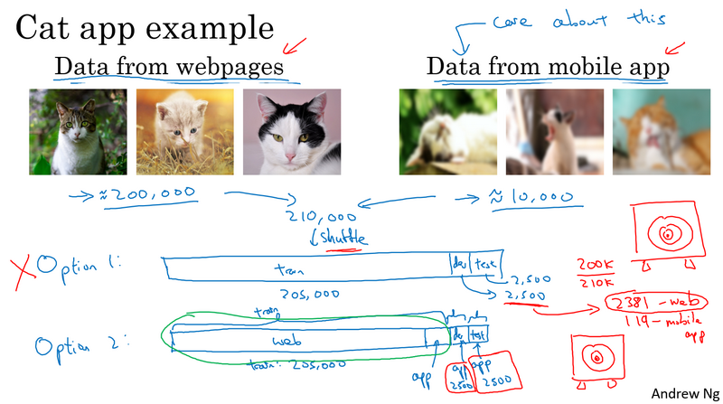
我建议你走另外一条路，就是这样，训练集，比如说还是205,000张图片，我们的训练集是来自网页下载的200,000张图片，然后如果需要的话，再加上5000张来自手机上传的图片。然后对于开发集和测试集，这数据集的大小是按比例画的，你的开发集和测试集都是手机图。而训练集包含了来自网页的20万张图片，还有5000张来自应用的图片，开发集就是2500张来自应用的图片，测试集也是2500张来自应用的图片。这样将数据分成训练集、开发集和测试集的好处在于，现在你瞄准的目标就是你想要处理的目标，你告诉你的团队，我的开发集包含的数据全部来自手机上传，这是你真正关心的图片分布。我们试试搭建一个学习系统，让系统在处理手机上传图片分布时效果良好。缺点在于，当然了，现在你的训练集分布和你的开发集、测试集分布并不一样。但事实证明，这样把数据分成训练、开发和测试集，在长期能给你带来更好的系统性能。我们以后会讨论一些特殊的技巧，可以处理 训练集的分布和开发集和测试集分布不一样的情况。
我们来看另一个样本，假设你正在开发一个全新的产品，一个语音激活汽车后视镜，这在中国是个真实存在的产品，它正在进入其他国家。但这就是造一个后视镜，把这个小东西换掉，现在你就可以和后视镜对话了，然后只需要说：“亲爱的后视镜，请帮我找找到最近的加油站的导航方向”，然后后视镜就会处理这个请求。所以这实际上是一个真正的产品，假设现在你要为你自己的国家研制这个产品，那么你怎么收集数据去训练这个产品语言识别模块呢？
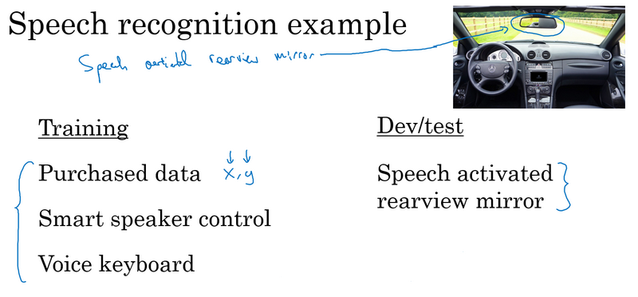
嗯，也许你已经在语音识别领域上工作了很久，所以你有很多来自其他语音识别应用的数据，它们并不是来自语音激活后视镜的数据。现在我讲讲如何分配训练集、开发集和测试集。对于你的训练集，你可以将你拥有的所有语音数据，从其他语音识别问题收集来的数据，比如这些年你从各种语音识别数据供应商买来的数据，今天你可以直接买到成,对的数据，其中是音频剪辑，是听写记录。或者也许你研究过智能音箱，语音激活音箱，所以你有一些数据，也许你做过语音激活键盘的开发之类的。
举例来说，也许你从这些来源收集了500,000段录音，对于你的开发集和测试集也许数据集小得多，比如实际上来自语音激活后视镜的数据。因为用户要查询导航信息或试图找到通往各个地方的路线，这个数据集可能会有很多街道地址，对吧？“请帮我导航到这个街道地址”，或者说：“请帮助我导航到这个加油站”，所以这个数据的分布和左边大不一样，但这真的是你关心的数据，因为这些数据是你的产品必须处理好的，所以你就应该把它设成你的开发和测试集。

在这个样本中，你应该这样设立你的训练集，左边有500,000段语音，然后你的开发集和测试集，我把它简写成和，可能每个集包含10,000段语音，是从实际的语音激活后视镜收集的。或者换种方式，如果你觉得不需要将20,000段来自语音激活后视镜的录音全部放进开发和测试集，也许你可以拿一半，把它放在训练集里，那么训练集可能是51万段语音，包括来自那里的50万段语音，还有来自后视镜的1万段语音，然后开发集和测试集也许各自有5000段语音。所以有2万段语音，也许1万段语音放入了训练集，5000放入开发集，5000放入测试集。所以这是另一种将你的数据分成训练、开发和测试的方式。这样你的训练集大得多，大概有50万段语音，比只用语音激活后视镜数据作为训练集要大得多。
所以在这个视频中，你们见到几组样本，让你的训练集数据来自和开发集、测试集不同的分布，这样你就可以有更多的训练数据。在这些样本中，这将改善你的学习算法。
现在你可能会问，是不是应该把收集到的数据都用掉？答案很微妙，不一定都是肯定的答案，我们在下段视频看看一个反例。
2.5 数据分布不匹配时，偏差与方差的分析（Bias and Variance with mismatched data distributions）
估计学习算法的偏差和方差真的可以帮你确定接下来应该优先做的方向，但是，当你的训练集来自和开发集、测试集不同分布时，分析偏差和方差的方式可能不一样，我们来看为什么。
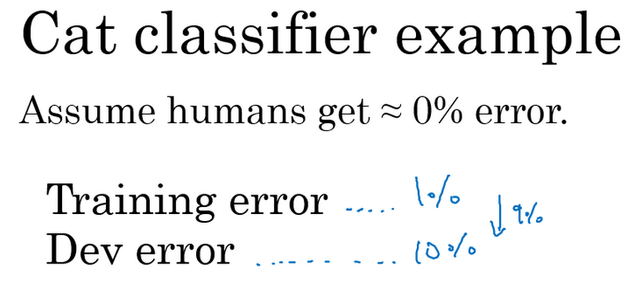
我们继续用猫分类器为例，我们说人类在这个任务上能做到几乎完美，所以贝叶斯错误率或者说贝叶斯最优错误率，我们知道这个问题里几乎是0%。所以要进行错误率分析，你通常需要看训练误差，也要看看开发集的误差。比如说，在这个样本中，你的训练集误差是1%，你的开发集误差是10%，如果你的开发集来自和训练集一样的分布，你可能会说，这里存在很大的方差问题，你的算法不能很好的从训练集出发泛化，它处理训练集很好，但处理开发集就突然间效果很差了。
但如果你的训练数据和开发数据来自不同的分布，你就不能再放心下这个结论了。特别是，也许算法在开发集上做得不错，可能因为训练集很容易识别，因为训练集都是高分辨率图片，很清晰的图像，但开发集要难以识别得多。所以也许软件没有方差问题，这只不过反映了开发集包含更难准确分类的图片。所以这个分析的问题在于，当你看训练误差，再看开发误差，有两件事变了。首先算法只见过训练集数据，没见过开发集数据。第二，开发集数据来自不同的分布。而且因为你同时改变了两件事情，很难确认这增加的9%误差率有多少是因为算法没看到开发集中的数据导致的，这是问题方差的部分，有多少是因为开发集数据就是不一样。
为了弄清楚哪个因素影响更大，如果你完全不懂这两种影响到底是什么，别担心我们马上会再讲一遍。但为了分辨清楚两个因素的影响，定义一组新的数据是有意义的，我们称之为训练-开发集，所以这是一个新的数据子集。我们应该从训练集的分布里挖出来，但你不会用来训练你的网络。
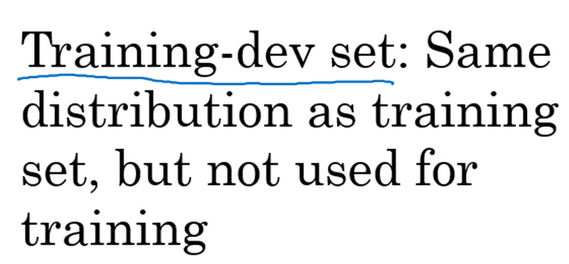
我的意思是我们已经设立过这样的训练集、开发集和测试集了，并且开发集和测试集来自相同的分布，但训练集来自不同的分布。
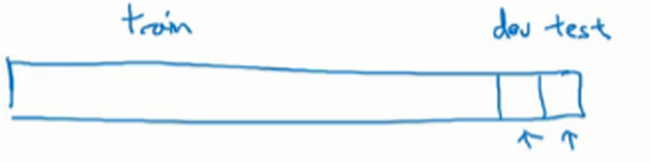
我们要做的是随机打散训练集，然后分出一部分训练集作为训练-开发集（training-dev），就像开发集和测试集来自同一分布，训练集、训练-开发集也来自同一分布。
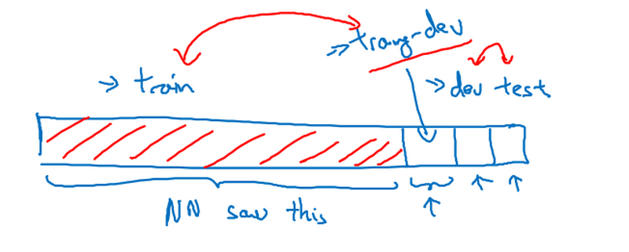
但不同的地方是，现在你只在训练集训练你的神经网络，你不会让神经网络在训练-开发集上跑后向传播。为了进行误差分析，你应该做的是看看分类器在训练集上的误差，训练-开发集上的误差，还有开发集上的误差。
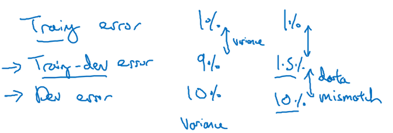
比如说这个样本中，训练误差是1%，我们说训练-开发集上的误差是9%，然后开发集误差是10%，和以前一样。你就可以从这里得到结论，当你从训练数据变到训练-开发集数据时，错误率真的上升了很多。而训练数据和训练-开发数据的差异在于，你的神经网络能看到第一部分数据并直接在上面做了训练，但没有在训练-开发集上直接训练，这就告诉你，算法存在方差问题，因为训练-开发集的错误率是在和训练集来自同一分布的数据中测得的。所以你知道，尽管你的神经网络在训练集中表现良好，但无法泛化到来自相同分布的训练-开发集里，它无法很好地泛化推广到来自同一分布，但以前没见过的数据中，所以在这个样本中我们确实有一个方差问题。
我们来看一个不同的样本，假设训练误差为1%，训练-开发误差为1.5%，但当你开始处理开发集时，错误率上升到10%。现在你的方差问题就很小了，因为当你从见过的训练数据转到训练-开发集数据，神经网络还没有看到的数据，错误率只上升了一点点。但当你转到开发集时，错误率就大大上升了，所以这是数据不匹配的问题。因为你的学习算法没有直接在训练-开发集或者开发集训练过，但是这两个数据集来自不同的分布。但不管算法在学习什么，它在训练-开发集上做的很好，但开发集上做的不好，所以总之你的算法擅长处理和你关心的数据不同的分布，我们称之为数据不匹配的问题。
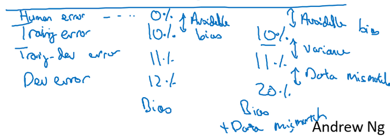
我们再来看几个样本，我会在下一行里写出来，因上面没空间了。所以训练误差、训练-开发误差、还有开发误差，我们说训练误差是10%，训练-开发误差是11%，开发误差为12%，要记住，人类水平对贝叶斯错误率的估计大概是0%，如果你得到了这种等级的表现，那就真的存在偏差问题了。存在可避免偏差问题，因为算法做的比人类水平差很多，所以这里的偏差真的很高。
最后一个例子，如果你的训练集错误率是10%，你的训练-开发错误率是11%，开发错误率是20%，那么这其实有两个问题。第一，可避免偏差相当高，因为你在训练集上都没有做得很好，而人类能做到接近0%错误率，但你的算法在训练集上错误率为10%。这里方差似乎很小，但数据不匹配问题很大。所以对于这个样本，我说，如果你有很大的偏差或者可避免偏差问题，还有数据不匹配问题。
我们看看这张幻灯片里做了什么，然后写出一般的原则，我们要看的关键数据是人类水平错误率，你的训练集错误率，训练-开发集错误率，所以这分布和训练集一样，但你没有直接在上面训练。根据这些错误率之间差距有多大，你可以大概知道，可避免偏差、方差数据不匹配问题各自有多大。
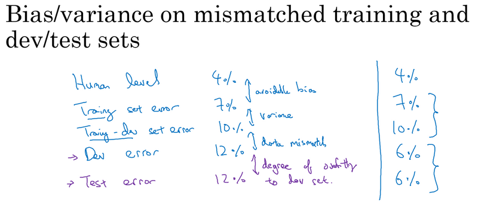
我们说人类水平错误率是4%的话，你的训练错误率是7%，而你的训练-开发错误率是10%，而开发错误率是12%，这样你就大概知道可避免偏差有多大。因为你知道，你希望你的算法至少要在训练集上的表现接近人类。而这大概表明了方差大小，所以你从训练集泛化推广到训练-开发集时效果如何？而这告诉你数据不匹配的问题大概有多大。技术上你还可以再加入一个数字，就是测试集表现，我们写成测试集错误率，你不应该在测试集上开发，因为你不希望对测试集过拟合。但如果你看看这个，那么这里的差距就说明你对开发集过拟合的程度。所以如果开发集表现和测试集表现有很大差距，那么你可能对开发集过拟合了，所以也许你需要一个更大的开发集，对吧？要记住，你的开发集和测试集来自同一分布，所以这里存在很大差距的话。如果算法在开发集上做的很好，比测试集好得多，那么你就可能对开发集过拟合了。如果是这种情况，那么你可能要往回退一步，然后收集更多开发集数据。现在我写出这些数字，这数字列表越往后数字越大。
这里还有个例子，其中数字并没有一直变大，也许人类的表现是4%，训练错误率是7%，训练-开发错误率是10%。但我们看看开发集，你发现，很意外，算法在开发集上做的更好，也许是6%。所以如果你见到这种现象，比如说在处理语音识别任务时发现这样，其中训练数据其实比你的开发集和测试集难识别得多。所以这两个（7%，10%）是从训练集分布评估的，而这两个（6%，6%）是从开发测试集分布评估的。所以有时候如果你的开发测试集分布比你应用实际处理的数据要容易得多，那么这些错误率可能真的会下降。所以如果你看到这样的有趣的事情，可能需要比这个分析更普适的分析，我在下一张幻灯片里快速解释一下。
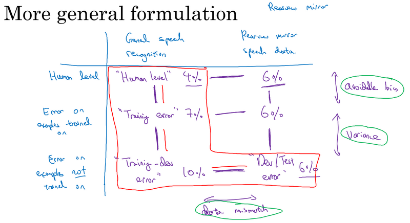
所以，我们就以语音激活后视镜为例子，事实证明，我们一直写出的数字可以放到一张表里，在水平轴上，我要放入不同的数据集。比如说，你可能从一般语音识别任务里得到很多数据，所以你可能会有一堆数据，来自小型智能音箱的语音识别问题的数据，你购买的数据等等。然后你收集了和后视镜有关的语音数据，在车里录的。所以这是表格的轴，不同的数据集。在另一条轴上，我要标记处理数据不同的方式或算法。
首先，人类水平，人类处理这些数据集时准确度是多少。然后这是神经网络训练过的数据集上达到的错误率，然后还有神经网络没有训练过的数据集上达到的错误率。所以结果我们上一张幻灯片说是人类水平的错误率，数字填入这个单元格里（第二行第二列），人类对这一类数据处理得有多好，比如来自各种语音识别系统的数据，那些进入你的训练集的成千上万的语音片段，而上一张幻灯片中的例子是4%。这个数字（7%），可能是我们的训练错误率，在上一张幻灯片中的例子中是7%。是的，如果你的学习算法见过这个样本，在这个样本上跑过梯度下降，这个样本来自你的训练集分布或一般的语音识别数据分布，你的算法在训练过的数据中表现如何呢？然后这就是训练-开发集错误率，通常来自这个分布的错误率会高一点，一般的语音识别数据，如果你的算法没在来自这个分布的样本上训练过，它的表现如何呢？这就是我们说的训练-开发集错误率。
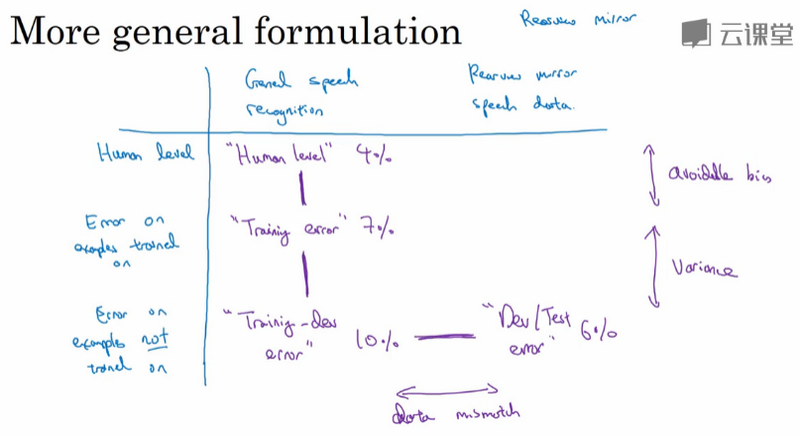
如果你移到右边去，这个单元格是开发集错误率，也可能是测试集错误，在刚刚的例子中是6%。而开发集和测试集，实际上是两个数字，但都可以放入这个单元格里。如果你有来自后视镜的数据，来自从后视镜应用在车里实际录得的数据，但你的神经网络没有在这些数据上做过反向传播，那么错误率是多少呢？
我们在上一张幻灯片作的分析是观察这两个数字之间的差异（Human level 4%和Training error 7%），还有这两个数字之间（Training error 7%和Training-dev error 10%），这两个数字之间（Training-dev error 10%和Dev/Test dev 6%）。这个差距（Human level 4%和Training error 7%）衡量了可避免偏差大小，这个差距Training error 7%和Training-dev error 10%）衡量了方差大小，而这个差距（Training-dev error 10%和Dev/Test dev 6%）衡量了数据不匹配问题的大小。
事实证明，把剩下的两个数字（rearview mirror speech data 6%和Error on examples trained on 6%），也放到这个表格里也是有用的。如果结果这也是6%，那么你获得这个数字的方式是你让一些人自己标记他们的后视镜语音识别数据，看看人类在这个任务里能做多好，也许结果也是6%。做法就是，你收集一些后视镜语音识别数据，把它放在训练集中，让神经网络去学习，然后测量那个数据子集上的错误率，但如果你得到这样的结果，好吧，那就是说你已经在后视镜语音数据上达到人类水平了，所以也许你对那个数据分布做的已经不错了。
当你继续进行更多分析时，分析并不一定会给你指明一条前进道路，但有时候你可能洞察到一些特征。比如比较这两个数字（General speech recognition Human level 4%和rearview mirror speech data 6%），告诉我们对于人类来说，后视镜的语音数据实际上比一般语音识别更难，因为人类都有6%的错误，而不是4%的错误，但看看这个差值，你就可以了解到偏差和方差，还有数据不匹配这些问题的不同程度。所以更一般的分析方法是，我已经用过几次了。我还没用过，但对于很多问题来说检查这个子集的条目，看看这些差值，已经足够让你往相对有希望的方向前进了。但有时候填满整个表格，你可能会洞察到更多特征。
最后，我们以前讲过很多处理偏差的手段，讲过处理方差的手段，但怎么处理数据不匹配呢？特别是开发集、测试集和你的训练集数据来自不同分布时，这样可以用更多训练数据，真正帮你提高学习算法性能。但是，如果问题不仅来自偏差和方差，你现在又有了这个潜在的新问题，数据不匹配，有什么好办法可以处理数据不匹配的呢？实话说，并没有很通用，或者至少说是系统解决数据不匹配问题的方法，但你可以做一些尝试，可能会有帮助，我们在下一个视频里看看这些尝试。
所以我们讲了如何使用来自和开发集、测试集不同分布的训练数据，这可以给你提供更多训练数据，因此有助于提高你的学习算法的性能，但是，潜在问题就不只是偏差和方差问题，这样做会引入第三个潜在问题，数据不匹配。如果你做了错误分析，并发现数据不匹配是大量错误的来源，那么你怎么解决这个问题呢？但结果很不幸，并没有特别系统的方法去解决数据不匹配问题，但你可以做一些尝试，可能会有帮助，我们来看下一段视频。
2.6 处理数据不匹配问题（Addressing data mismatch）
如果您的训练集来自和开发测试集不同的分布，如果错误分析显示你有一个数据不匹配的问题该怎么办？这个问题没有完全系统的解决方案，但我们可以看看一些可以尝试的事情。如果我发现有严重的数据不匹配问题，我通常会亲自做错误分析，尝试了解训练集和开发测试集的具体差异。技术上，为了避免对测试集过拟合，要做错误分析，你应该人工去看开发集而不是测试集。
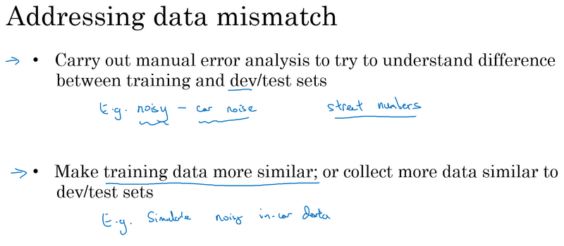
但作为一个具体的例子，如果你正在开发一个语音激活的后视镜应用，你可能要看看……我想如果是语音的话，你可能要听一下来自开发集的样本，尝试弄清楚开发集和训练集到底有什么不同。所以，比如说你可能会发现很多开发集样本噪音很多，有很多汽车噪音，这是你的开发集和训练集差异之一。也许你还会发现其他错误，比如在你的车子里的语言激活后视镜，你发现它可能经常识别错误街道号码，因为那里有很多导航请求都有街道地址，所以得到正确的街道号码真的很重要。当你了解开发集误差的性质时，你就知道，开发集有可能跟训练集不同或者更难识别，那么你可以尝试把训练数据变得更像开发集一点，或者，你也可以收集更多类似你的开发集和测试集的数据。所以，比如说，如果你发现车辆背景噪音是主要的错误来源，那么你可以模拟车辆噪声数据，我会在下一张幻灯片里详细讨论这个问题。或者你发现很难识别街道号码，也许你可以有意识地收集更多人们说数字的音频数据，加到你的训练集里。
现在我知道这张幻灯片只给出了粗略的指南，列出一些你可以做的尝试，这不是一个系统化的过程，我想，这不能保证你一定能取得进展。但我发现这种人工见解，我们可以一起尝试收集更多和真正重要的场合相似的数据，这通常有助于解决很多问题。所以，如果你的目标是让训练数据更接近你的开发集，那么你可以怎么做呢？
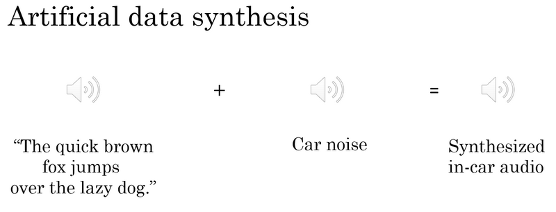
你可以利用的其中一种技术是人工合成数据（artificial data synthesis），我们讨论一下。在解决汽车噪音问题的场合，所以要建立语音识别系统。也许实际上你没那么多实际在汽车背景噪音下录得的音频，或者在高速公路背景噪音下录得的音频。但我们发现，你可以合成。所以假设你录制了大量清晰的音频，不带车辆背景噪音的音频，“The quick brown fox jumps over the lazy dog”（音频播放），所以，这可能是你的训练集里的一段音频，顺便说一下，这个句子在AI测试中经常使用，因为这个短句包含了从a到z所有字母，所以你会经常见到这个句子。但是，有了这个“the quick brown fox jumps over the lazy dog”这段录音之后，你也可以收集一段这样的汽车噪音，（播放汽车噪音音频）这就是汽车内部的背景噪音，如果你一言不发开车的话，就是这种声音。如果你把两个音频片段放到一起，你就可以合成出"the quick brown fox jumps over the lazy dog"（带有汽车噪声），在汽车背景噪音中的效果，听起来像这样，所以这是一个相对简单的音频合成例子。在实践中，你可能会合成其他音频效果，比如混响，就是声音从汽车内壁上反弹叠加的效果。
但是通过人工数据合成，你可以快速制造更多的训练数据，就像真的在车里录的那样，那就不需要花时间实际出去收集数据，比如说在实际行驶中的车子，录下上万小时的音频。所以，如果错误分析显示你应该尝试让你的数据听起来更像在车里录的，那么人工合成那种音频，然后喂给你的机器学习算法，这样做是合理的。
现在我们要提醒一下，人工数据合成有一个潜在问题，比如说，你在安静的背景里录得10,000小时音频数据，然后，比如说，你只录了一小时车辆背景噪音，那么，你可以这么做，将这1小时汽车噪音回放10,000次，并叠加到在安静的背景下录得的10,000小时数据。如果你这么做了，人听起来这个音频没什么问题。但是有一个风险，有可能你的学习算法对这1小时汽车噪音过拟合。特别是，如果这组汽车里录的音频可能是你可以想象的所有汽车噪音背景的集合，如果你只录了一小时汽车噪音，那你可能只模拟了全部数据空间的一小部分，你可能只从汽车噪音的很小的子集来合成数据。
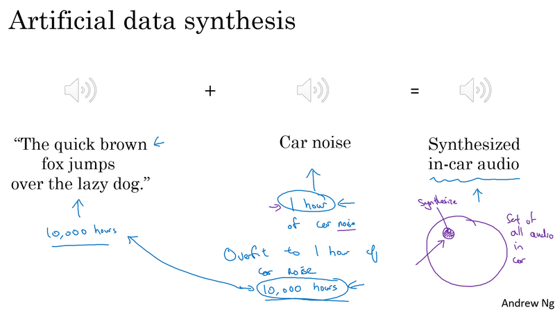
而对于人耳来说，这些音频听起来没什么问题，因为一小时的车辆噪音对人耳来说，听起来和其他任意一小时车辆噪音是一样的。但你有可能从这整个空间很小的一个子集出发合成数据，神经网络最后可能对你这一小时汽车噪音过拟合。我不知道以较低成本收集10,000小时的汽车噪音是否可行，这样你就不用一遍又一遍地回放那1小时汽车噪音，你就有10,000个小时永不重复的汽车噪音来叠加到10,000小时安静背景下录得的永不重复的语音录音。这是可以做的，但不保证能做。但是使用10,000小时永不重复的汽车噪音，而不是1小时重复学习，算法有可能取得更好的性能。人工数据合成的挑战在于，人耳的话，人耳是无法分辨这10,000个小时听起来和那1小时没什么区别，所以你最后可能会制造出这个原始数据很少的，在一个小得多的空间子集合成的训练数据，但你自己没意识到。
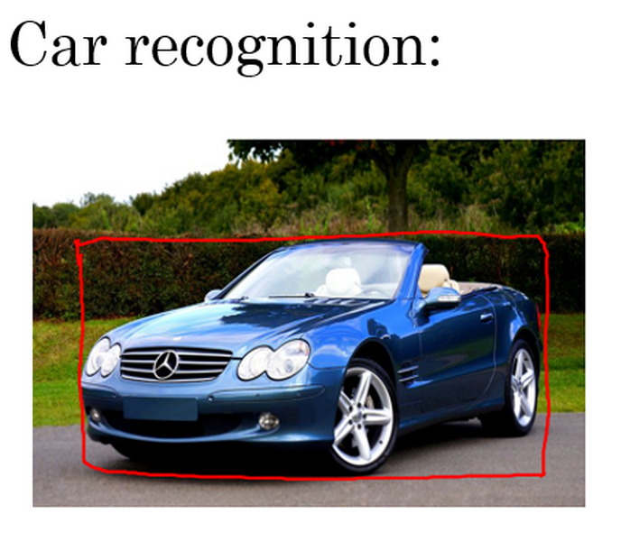
这里有人工合成数据的另一个例子，假设你在研发无人驾驶汽车，你可能希望检测出这样的车，然后用这样的框包住它。很多人都讨论过的一个思路是，为什么不用计算机合成图像来模拟成千上万的车辆呢？事实上，这里有几张车辆照片（下图后两张图片），其实是用计算机合成的，我想这个合成是相当逼真的，我想通过这样合成图片，你可以训练出一个相当不错的计算机视觉系统来检测车子。
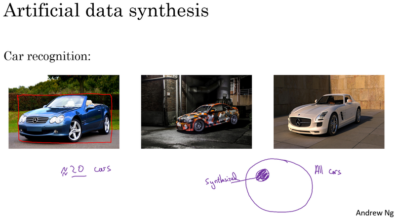
不幸的是，上一张幻灯片介绍的情况也会在这里出现，比如这是所有车的集合，如果你只合成这些车中很小的子集，对于人眼来说也许这样合成图像没什么问题，但你的学习算法可能会对合成的这一个小子集过拟合。特别是很多人都独立提出了一个想法，一旦你找到一个电脑游戏，里面车辆渲染的画面很逼真，那么就可以截图，得到数量巨大的汽车图片数据集。事实证明，如果你仔细观察一个视频游戏，如果这个游戏只有20辆独立的车，那么这游戏看起来还行。因为你是在游戏里开车，你只看到这20辆车，这个模拟看起来相当逼真。但现实世界里车辆的设计可不只20种，如果你用着20量独特的车合成的照片去训练系统，那么你的神经网络很可能对这20辆车过拟合，但人类很难分辨出来。即使这些图像看起来很逼真，你可能真的只用了所有可能出现的车辆的很小的子集。
所以，总而言之，如果你认为存在数据不匹配问题，我建议你做错误分析，或者看看训练集，或者看看开发集，试图找出，试图了解这两个数据分布到底有什么不同，然后看看是否有办法收集更多看起来像开发集的数据作训练。
我们谈到其中一种办法是人工数据合成，人工数据合成确实有效。在语音识别中。我已经看到人工数据合成显著提升了已经非常好的语音识别系统的表现，所以这是可行的。但当你使用人工数据合成时，一定要谨慎，要记住你有可能从所有可能性的空间只选了很小一部分去模拟数据。
所以这就是如何处理数据不匹配问题，接下来，我想和你分享一些想法就是如何从多种类型的数据同时学习。
2.7 迁移学习（Transfer learning）
深度学习中，最强大的理念之一就是，有的时候神经网络可以从一个任务中习得知识，并将这些知识应用到另一个独立的任务中。所以例如，也许你已经训练好一个神经网络，能够识别像猫这样的对象，然后使用那些知识，或者部分习得的知识去帮助您更好地阅读x射线扫描图，这就是所谓的迁移学习。
我们来看看，假设你已经训练好一个图像识别神经网络，所以你首先用一个神经网络，并在对上训练，其中是图像，是某些对象，图像是猫、狗、鸟或其他东西。如果你把这个神经网络拿来，然后让它适应或者说迁移，在不同任务中学到的知识，比如放射科诊断，就是说阅读射线扫描图。你可以做的是把神经网络最后的输出层拿走，就把它删掉，还有进入到最后一层的权重删掉，然后为最后一层重新赋予随机权重，然后让它在放射诊断数据上训练。
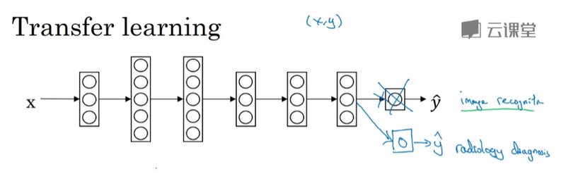
具体来说，在第一阶段训练过程中，当你进行图像识别任务训练时，你可以训练神经网络的所有常用参数，所有的权重，所有的层，然后你就得到了一个能够做图像识别预测的网络。在训练了这个神经网络后，要实现迁移学习，你现在要做的是，把数据集换成新的对，现在这些变成放射科图像，而是你想要预测的诊断，你要做的是初始化最后一层的权重，让我们称之为和随机初始化。
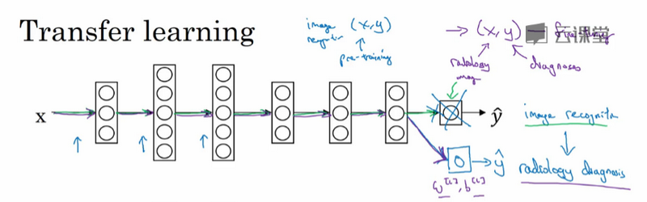
现在，我们在这个新数据集上重新训练网络，在新的放射科数据集上训练网络。要用放射科数据集重新训练神经网络有几种做法。你可能，如果你的放射科数据集很小，你可能只需要重新训练最后一层的权重，就是和并保持其他参数不变。如果你有足够多的数据，你可以重新训练神经网络中剩下的所有层。经验规则是，如果你有一个小数据集，就只训练输出层前的最后一层，或者也许是最后一两层。但是如果你有很多数据，那么也许你可以重新训练网络中的所有参数。如果你重新训练神经网络中的所有参数，那么这个在图像识别数据的初期训练阶段，有时称为预训练（pre-training），因为你在用图像识别数据去预先初始化，或者预训练神经网络的权重。然后，如果你以后更新所有权重，然后在放射科数据上训练，有时这个过程叫微调（fine tuning）。如果你在深度学习文献中看到预训练和微调，你就知道它们说的是这个意思，预训练和微调的权重来源于迁移学习。
在这个例子中你做的是，把图像识别中学到的知识应用或迁移到放射科诊断上来，为什么这样做有效果呢？有很多低层次特征，比如说边缘检测、曲线检测、阳性对象检测（positive objects），从非常大的图像识别数据库中习得这些能力可能有助于你的学习算法在放射科诊断中做得更好，算法学到了很多结构信息，图像形状的信息，其中一些知识可能会很有用，所以学会了图像识别，它就可能学到足够多的信息，可以了解不同图像的组成部分是怎样的，学到线条、点、曲线这些知识，也许对象的一小部分，这些知识有可能帮助你的放射科诊断网络学习更快一些，或者需要更少的学习数据。
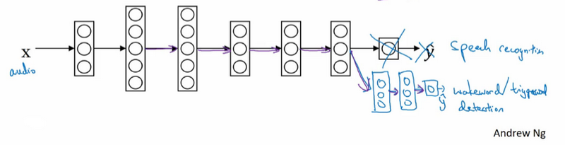
这里是另一个例子，假设你已经训练出一个语音识别系统，现在是音频或音频片段输入，而是听写文本，所以你已经训练了语音识别系统，让它输出听写文本。现在我们说你想搭建一个“唤醒词”或“触发词”检测系统，所谓唤醒词或触发词就是我们说的一句话，可以唤醒家里的语音控制设备，比如你说“Alexa”可以唤醒一个亚马逊Echo设备,或用“OK Google”来唤醒Google设备，用"Hey Siri"来唤醒苹果设备，用"你好百度"唤醒一个百度设备。要做到这点，你可能需要去掉神经网络的最后一层，然后加入新的输出节点，但有时你可以不只加入一个新节点，或者甚至往你的神经网络加入几个新层，然后把唤醒词检测问题的标签喂进去训练。再次，这取决于你有多少数据，你可能只需要重新训练网络的新层，也许你需要重新训练神经网络中更多的层。
那么迁移学习什么时候是有意义的呢？迁移学习起作用的场合是，在迁移来源问题中你有很多数据，但迁移目标问题你没有那么多数据。例如，假设图像识别任务中你有1百万个样本，所以这里数据相当多。可以学习低层次特征，可以在神经网络的前面几层学到如何识别很多有用的特征。但是对于放射科任务，也许你只有一百个样本，所以你的放射学诊断问题数据很少，也许只有100次射线扫描，所以你从图像识别训练中学到的很多知识可以迁移，并且真正帮你加强放射科识别任务的性能，即使你的放射科数据很少。
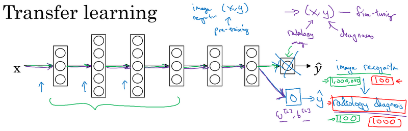
对于语音识别，也许你已经用10,000小时数据训练过你的语言识别系统，所以你从这10,000小时数据学到了很多人类声音的特征，这数据量其实很多了。但对于触发字检测，也许你只有1小时数据，所以这数据太小，不能用来拟合很多参数。所以在这种情况下，预先学到很多人类声音的特征人类语言的组成部分等等知识，可以帮你建立一个很好的唤醒字检测器，即使你的数据集相对较小。对于唤醒词任务来说，至少数据集要小得多。
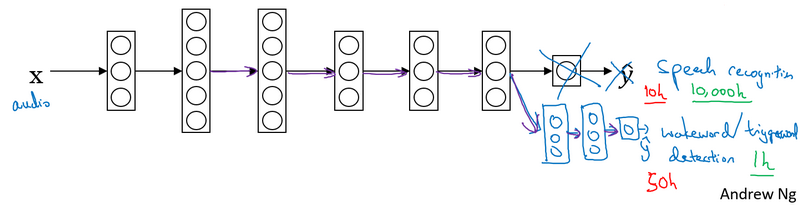
所以在这两种情况下，你从数据量很多的问题迁移到数据量相对小的问题。然后反过来的话，迁移学习可能就没有意义了。比如，你用100张图训练图像识别系统，然后有100甚至1000张图用于训练放射科诊断系统，人们可能会想，为了提升放射科诊断的性能，假设你真的希望这个放射科诊断系统做得好，那么用放射科图像训练可能比使用猫和狗的图像更有价值，所以这里（100甚至1000张图用于训练放射科诊断系统）的每个样本价值比这里（100张图训练图像识别系统）要大得多，至少就建立性能良好的放射科系统而言是这样。所以，如果你的放射科数据更多，那么你这100张猫猫狗狗或者随机物体的图片肯定不会有太大帮助，因为来自猫狗识别任务中，每一张图的价值肯定不如一张射线扫描图有价值，对于建立良好的放射科诊断系统而言是这样。
所以，这是其中一个例子，说明迁移学习可能不会有害，但也别指望这么做可以带来有意义的增益。同样，如果你用10小时数据训练出一个语音识别系统。然后你实际上有10个小时甚至更多，比如说50个小时唤醒字检测的数据，你知道迁移学习有可能会有帮助，也可能不会，也许把这10小时数据迁移学习不会有太大坏处，但是你也别指望会得到有意义的增益。
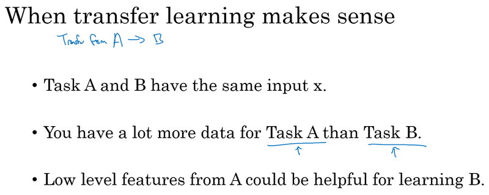
所以总结一下，什么时候迁移学习是有意义的？如果你想从任务学习并迁移一些知识到任务，那么当任务和任务都有同样的输入时，迁移学习是有意义的。在第一个例子中，和的输入都是图像，在第二个例子中，两者输入都是音频。当任务的数据比任务多得多时，迁移学习意义更大。所有这些假设的前提都是，你希望提高任务的性能，因为任务每个数据更有价值，对任务来说通常任务的数据量必须大得多，才有帮助，因为任务里单个样本的价值没有比任务单个样本价值大。然后如果你觉得任务的低层次特征，可以帮助任务的学习，那迁移学习更有意义一些。
而在这两个前面的例子中，也许学习图像识别教给系统足够多图像相关的知识，让它可以进行放射科诊断，也许学习语音识别教给系统足够多人类语言信息，能帮助你开发触发字或唤醒字检测器。
所以总结一下，迁移学习最有用的场合是，如果你尝试优化任务B的性能，通常这个任务数据相对较少，例如，在放射科中你知道很难收集很多射线扫描图来搭建一个性能良好的放射科诊断系统，所以在这种情况下，你可能会找一个相关但不同的任务，如图像识别，其中你可能用1百万张图片训练过了，并从中学到很多低层次特征，所以那也许能帮助网络在任务在放射科任务上做得更好，尽管任务没有这么多数据。迁移学习什么时候是有意义的？它确实可以显著提高你的学习任务的性能，但我有时候也见过有些场合使用迁移学习时，任务实际上数据量比任务要少，这种情况下增益可能不多。
好，这就是迁移学习，你从一个任务中学习，然后尝试迁移到另一个不同任务中。从多个任务中学习还有另外一个版本，就是所谓的多任务学习，当你尝试从多个任务中并行学习，而不是串行学习，在训练了一个任务之后试图迁移到另一个任务，所以在下一个视频中，让我们来讨论多任务学习。
2.8 多任务学习（Multi-task learning）
在迁移学习中，你的步骤是串行的，你从任务里学习只是然后迁移到任务。在多任务学习中，你是同时开始学习的，试图让单个神经网络同时做几件事情，然后希望这里每个任务都能帮到其他所有任务。
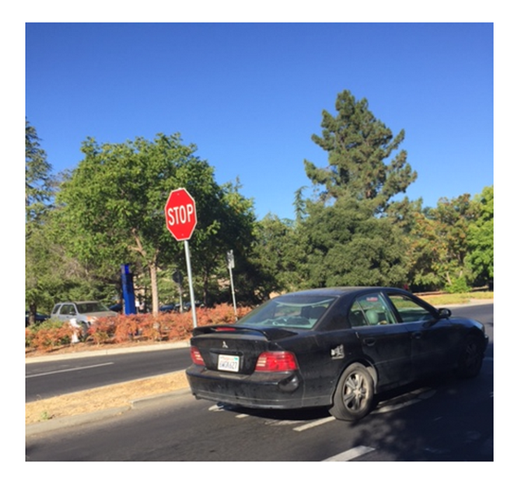
我们来看一个例子，假设你在研发无人驾驶车辆，那么你的无人驾驶车可能需要同时检测不同的物体，比如检测行人、车辆、停车标志，还有交通灯各种其他东西。比如在左边这个例子中，图像里有个停车标志，然后图像中有辆车，但没有行人，也没有交通灯。
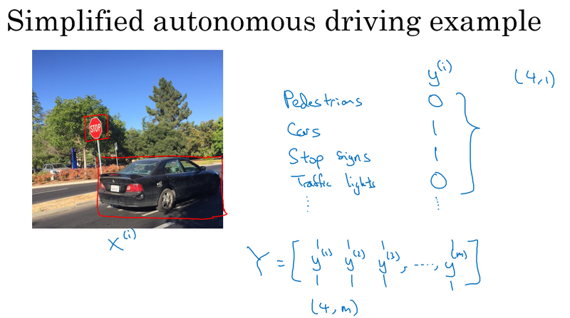
如果这是输入图像，那么这里不再是一个标签 ，而是有4个标签。在这个例子中，没有行人，有一辆车，有一个停车标志，没有交通灯。然后如果你尝试检测其他物体，也许 的维数会更高，现在我们就先用4个吧，所以 是个4×1向量。如果你从整体来看这个训练集标签和以前类似，我们将训练集的标签水平堆叠起来，像这样一直到：
不过现在是4×1向量，所以这些都是竖向的列向量，所以这个矩阵现在变成矩阵。而之前，当是单实数时，这就是矩阵。
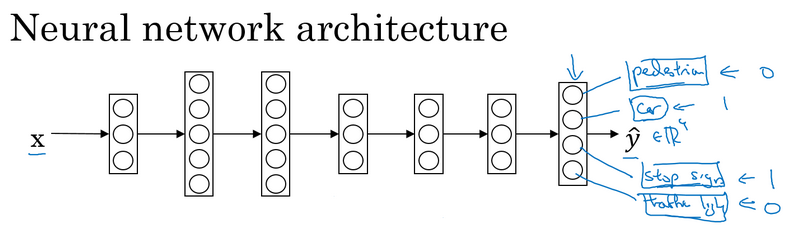
那么你现在可以做的是训练一个神经网络，来预测这些值，你就得到这样的神经网络，输入，现在输出是一个四维向量。请注意，这里输出我画了四个节点，所以第一个节点就是我们想预测图中有没有行人，然后第二个输出节点预测的是有没有车，这里预测有没有停车标志，这里预测有没有交通灯，所以这里是四维的。
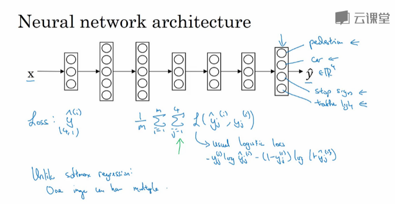
要训练这个神经网络，你现在需要定义神经网络的损失函数，对于一个输出，是个4维向量，对于整个训练集的平均损失：
这些单个预测的损失，所以这就是对四个分量的求和，行人、车、停车标志、交通灯，而这个标志L指的是logistic损失，我们就这么写：
整个训练集的平均损失和之前分类猫的例子主要区别在于，现在你要对到4求和，这与softmax回归的主要区别在于，与softmax回归不同，softmax将单个标签分配给单个样本。
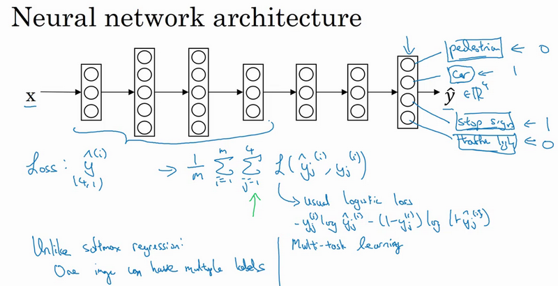
而这张图可以有很多不同的标签，所以不是说每张图都只是一张行人图片，汽车图片、停车标志图片或者交通灯图片。你要知道每张照片是否有行人、或汽车、停车标志或交通灯，多个物体可能同时出现在一张图里。实际上，在上一张幻灯片中，那张图同时有车和停车标志，但没有行人和交通灯，所以你不是只给图片一个标签，而是需要遍历不同类型，然后看看每个类型，那类物体有没有出现在图中。所以我就说在这个场合，一张图可以有多个标签。如果你训练了一个神经网络，试图最小化这个成本函数，你做的就是多任务学习。因为你现在做的是建立单个神经网络，观察每张图，然后解决四个问题，系统试图告诉你，每张图里面有没有这四个物体。另外你也可以训练四个不同的神经网络，而不是训练一个网络做四件事情。但神经网络一些早期特征，在识别不同物体时都会用到，然后你发现，训练一个神经网络做四件事情会比训练四个完全独立的神经网络分别做四件事性能要更好，这就是多任务学习的力量。
另一个细节，到目前为止，我是这么描述算法的，好像每张图都有全部标签。事实证明，多任务学习也可以处理图像只有部分物体被标记的情况。所以第一个训练样本，我们说有人，给数据贴标签的人告诉你里面有一个行人，没有车，但他们没有标记是否有停车标志，或者是否有交通灯。也许第二个例子中，有行人，有车。但是，当标记人看着那张图片时，他们没有加标签，没有标记是否有停车标志，是否有交通灯等等。也许有些样本都有标记，但也许有些样本他们只标记了有没有车，然后还有一些是问号。
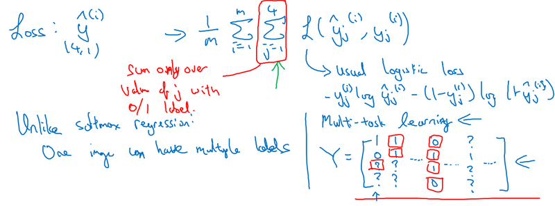
即使是这样的数据集，你也可以在上面训练算法，同时做四个任务，即使一些图像只有一小部分标签，其他是问号或者不管是什么。然后你训练算法的方式，即使这里有些标签是问号，或者没有标记，这就是对从1到4求和，你就只对带0和1标签的值求和，所以当有问号的时候，你就在求和时忽略那个项，这样只对有标签的值求和，于是你就能利用这样的数据集。
那么多任务学习什么时候有意义呢？当三件事为真时，它就是有意义的。
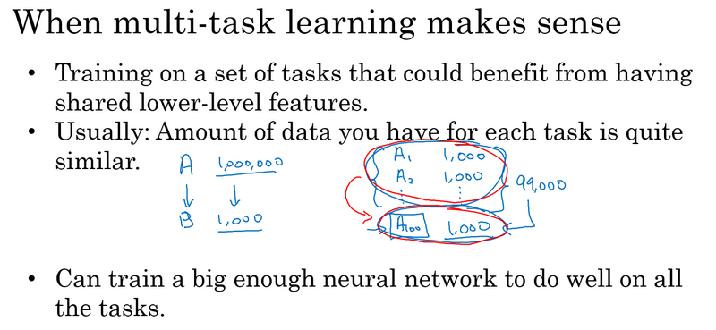
第一，如果你训练的一组任务，可以共用低层次特征。对于无人驾驶的例子，同时识别交通灯、汽车和行人是有道理的，这些物体有相似的特征，也许能帮你识别停车标志，因为这些都是道路上的特征。
第二，这个准则没有那么绝对，所以不一定是对的。但我从很多成功的多任务学习案例中看到，如果每个任务的数据量很接近，你还记得迁移学习时，你从任务学到知识然后迁移到任务，所以如果任务有1百万个样本，任务只有1000个样本，那么你从这1百万个样本学到的知识，真的可以帮你增强对更小数据集任务的训练。那么多任务学习又怎么样呢？在多任务学习中，你通常有更多任务而不仅仅是两个，所以也许你有，以前我们有4个任务，但比如说你要完成100个任务，而你要做多任务学习，尝试同时识别100种不同类型的物体。你可能会发现，每个任务大概有1000个样本。所以如果你专注加强单个任务的性能，比如我们专注加强第100个任务的表现，我们用表示，如果你试图单独去做这个最后的任务，你只有1000个样本去训练这个任务，这是100项任务之一，而通过在其他99项任务的训练，这些加起来可以一共有99000个样本，这可能大幅提升算法性能，可以提供很多知识来增强这个任务的性能。不然对于任务，只有1000个样本的训练集，效果可能会很差。如果有对称性，这其他99个任务，也许能提供一些数据或提供一些知识来帮到这100个任务中的每一个任务。所以第二点不是绝对正确的准则，但我通常会看的是如果你专注于单项任务，如果想要从多任务学习得到很大性能提升，那么其他任务加起来必须要有比单个任务大得多的数据量。要满足这个条件，其中一种方法是，比如右边这个例子这样，或者如果每个任务中的数据量很相近，但关键在于，如果对于单个任务你已经有1000个样本了，那么对于所有其他任务，你最好有超过1000个样本，这样其他任务的知识才能帮你改善这个任务的性能。
最后多任务学习往往在以下场合更有意义，当你可以训练一个足够大的神经网络，同时做好所有的工作，所以多任务学习的替代方法是为每个任务训练一个单独的神经网络。所以不是训练单个神经网络同时处理行人、汽车、停车标志和交通灯检测。你可以训练一个用于行人检测的神经网络，一个用于汽车检测的神经网络，一个用于停车标志检测的神经网络和一个用于交通信号灯检测的神经网络。那么研究员Rich Carona几年前发现的是什么呢？多任务学习会降低性能的唯一情况，和训练单个神经网络相比性能更低的情况就是你的神经网络还不够大。但如果你可以训练一个足够大的神经网络，那么多任务学习肯定不会或者很少会降低性能，我们都希望它可以提升性能，比单独训练神经网络来单独完成各个任务性能要更好。
所以这就是多任务学习，在实践中，多任务学习的使用频率要低于迁移学习。我看到很多迁移学习的应用，你需要解决一个问题，但你的训练数据很少，所以你需要找一个数据很多的相关问题来预先学习，并将知识迁移到这个新问题上。但多任务学习比较少见，就是你需要同时处理很多任务，都要做好，你可以同时训练所有这些任务，也许计算机视觉是一个例子。在物体检测中，我们看到更多使用多任务学习的应用，其中一个神经网络尝试检测一大堆物体，比分别训练不同的神经网络检测物体更好。但我说，平均来说，目前迁移学习使用频率更高，比多任务学习频率要高，但两者都可以成为你的强力工具。
所以总结一下，多任务学习能让你训练一个神经网络来执行许多任务，这可以给你更高的性能，比单独完成各个任务更高的性能。但要注意，实际上迁移学习比多任务学习使用频率更高。我看到很多任务都是，如果你想解决一个机器学习问题，但你的数据集相对较小，那么迁移学习真的能帮到你，就是如果你找到一个相关问题，其中数据量要大得多，你就能以它为基础训练你的神经网络，然后迁移到这个数据量很少的任务上来。
今天我们学到了很多和迁移学习有关的问题，还有一些迁移学习和多任务学习的应用。但多任务学习，我觉得使用频率比迁移学习要少得多，也许其中一个例外是计算机视觉，物体检测。在那些任务中，人们经常训练一个神经网络同时检测很多不同物体，这比训练单独的神经网络来检测视觉物体要更好。但平均而言，我认为即使迁移学习和多任务学习工作方式类似。实际上，我看到用迁移学习比多任务学习要更多，我觉得这是因为你很难找到那么多相似且数据量对等的任务可以用单一神经网络训练。再次，在计算机视觉领域，物体检测这个例子是最显著的例外情况。
所以这就是多任务学习，多任务学习和迁移学习都是你的工具包中的重要工具。最后，我想继续讨论端到端深度学习，所以我们来看下一个视频来讨论端到端学习。
2.9 什么是端到端的深度学习？（What is end-to-end deep learning?）
深度学习中最令人振奋的最新动态之一就是端到端深度学习的兴起，那么端到端学习到底是什么呢？简而言之，以前有一些数据处理系统或者学习系统，它们需要多个阶段的处理。那么端到端深度学习就是忽略所有这些不同的阶段，用单个神经网络代替它。
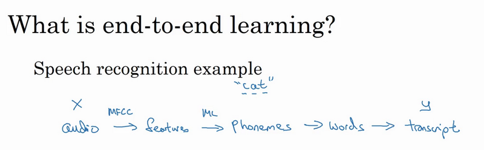
我们来看一些例子，以语音识别为例，你的目标是输入，比如说一段音频，然后把它映射到一个输出，就是这段音频的听写文本。所以传统上，语音识别需要很多阶段的处理。首先你会提取一些特征，一些手工设计的音频特征，也许你听过MFCC，这种算法是用来从音频中提取一组特定的人工设计的特征。在提取出一些低层次特征之后，你可以应用机器学习算法在音频片段中找到音位，所以音位是声音的基本单位，比如说“Cat”这个词是三个音节构成的，Cu-、Ah-和Tu-，算法就把这三个音位提取出来，然后你将音位串在一起构成独立的词，然后你将词串起来构成音频片段的听写文本。
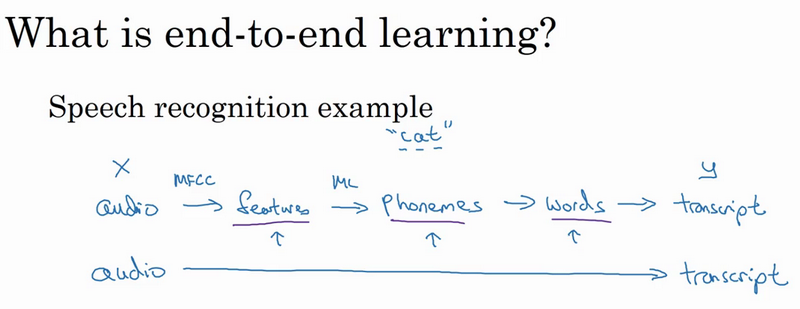
所以和这种有很多阶段的流水线相比，端到端深度学习做的是，你训练一个巨大的神经网络，输入就是一段音频，输出直接是听写文本。AI的其中一个有趣的社会学效应是，随着端到端深度学习系统表现开始更好，有一些花了大量时间或者整个事业生涯设计出流水线各个步骤的研究员，还有其他领域的研究员，不只是语言识别领域的，也许是计算机视觉，还有其他领域，他们花了大量的时间，写了很多论文，有些甚至整个职业生涯的一大部分都投入到开发这个流水线的功能或者其他构件上去了。而端到端深度学习就只需要把训练集拿过来，直接学到了和之间的函数映射，直接绕过了其中很多步骤。对一些学科里的人来说，这点相当难以接受，他们无法接受这样构建AI系统，因为有些情况，端到端方法完全取代了旧系统，某些投入了多年研究的中间组件也许已经过时了。
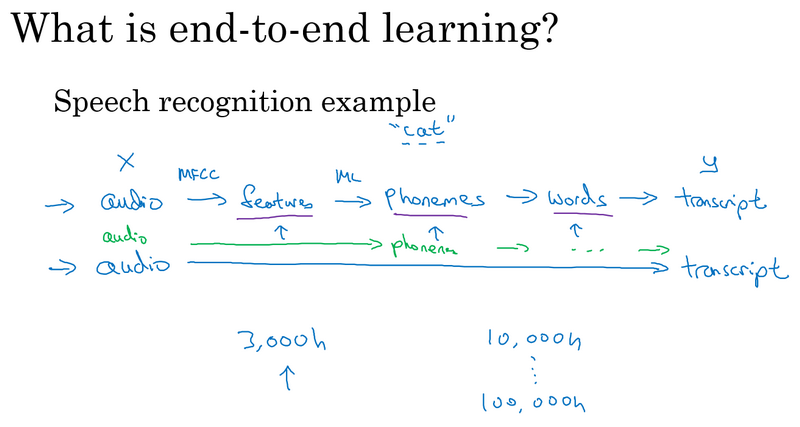
事实证明，端到端深度学习的挑战之一是，你可能需要大量数据才能让系统表现良好，比如，你只有3000小时数据去训练你的语音识别系统，那么传统的流水线效果真的很好。但当你拥有非常大的数据集时，比如10,000小时数据或者100,000小时数据，这样端到端方法突然开始很厉害了。所以当你的数据集较小的时候，传统流水线方法其实效果也不错，通常做得更好。你需要大数据集才能让端到端方法真正发出耀眼光芒。如果你的数据量适中，那么也可以用中间件方法，你可能输入还是音频，然后绕过特征提取，直接尝试从神经网络输出音位，然后也可以在其他阶段用，所以这是往端到端学习迈出的一小步，但还没有到那里。
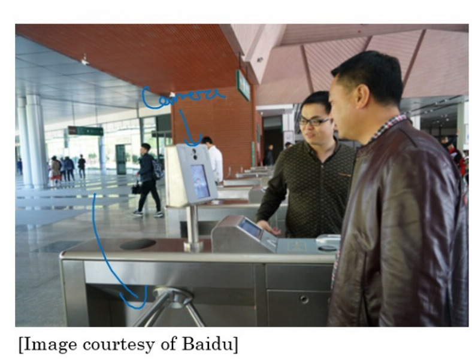
这张图上是一个研究员做的人脸识别门禁，是百度的林元庆研究员做的。这是一个相机，它会拍下接近门禁的人，如果它认出了那个人，门禁系统就自动打开，让他通过，所以你不需要刷一个RFID工卡就能进入这个设施。系统部署在越来越多的中国办公室，希望在其他国家也可以部署更多，你可以接近门禁，如果它认出你的脸，它就直接让你通过，你不需要带RFID工卡。
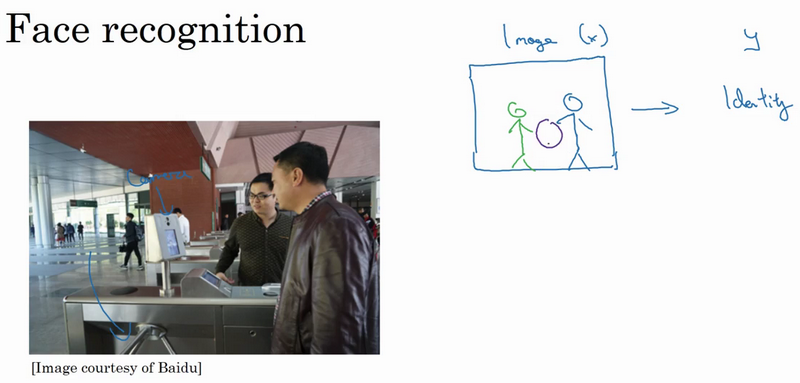
那么，怎么搭建这样的系统呢？你可以做的第一件事是，看看相机拍到的照片，对吧？我想我画的不太好，但也许这是相机照片，你知道，有人接近门禁了，所以这可能是相机拍到的图像。有件事你可以做，就是尝试直接学习图像到人物身份的函数映射，事实证明这不是最好的方法。其中一个问题是，人可以从很多不同的角度接近门禁，他们可能在绿色位置，可能在蓝色位置。有时他们更靠近相机，所以他们看起来更大，有时候他们非常接近相机，那照片中脸就很大了。在实际研制这些门禁系统时，他不是直接将原始照片喂到一个神经网络，试图找出一个人的身份。
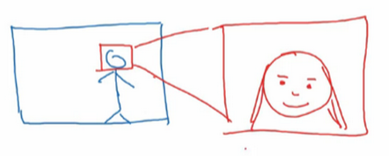
相反，迄今为止最好的方法似乎是一个多步方法，首先，你运行一个软件来检测人脸，所以第一个检测器找的是人脸位置，检测到人脸，然后放大图像的那部分，并裁剪图像，使人脸居中显示，然后就是这里红线框起来的照片，再喂到神经网络里，让网络去学习，或估计那人的身份。
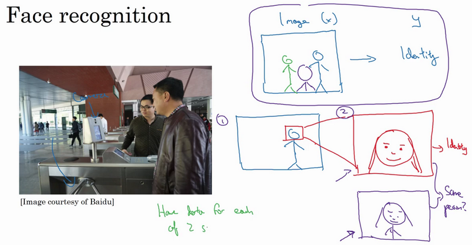
研究人员发现，比起一步到位，一步学习，把这个问题分解成两个更简单的步骤。首先，是弄清楚脸在哪里。第二步是看着脸，弄清楚这是谁。这第二种方法让学习算法，或者说两个学习算法分别解决两个更简单的任务，并在整体上得到更好的表现。
顺便说一句，如果你想知道第二步实际是怎么工作的，我这里其实省略了很多。训练第二步的方式，训练网络的方式就是输入两张图片，然后你的网络做的就是将输入的两张图比较一下，判断是否是同一个人。比如你记录了10,000个员工ID，你可以把红色框起来的图像快速比较……也许是全部10,000个员工记录在案的ID，看看这张红线内的照片，是不是那10000个员工之一，来判断是否应该允许其进入这个设施或者进入这个办公楼。这是一个门禁系统，允许员工进入工作场所的门禁。
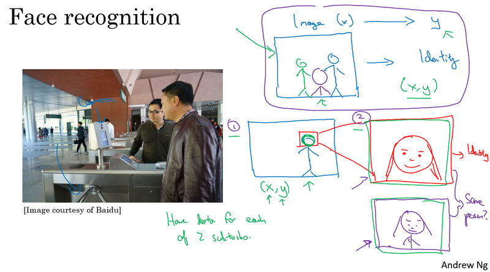
为什么两步法更好呢？实际上有两个原因。一是，你解决的两个问题，每个问题实际上要简单得多。但第二，两个子任务的训练数据都很多。具体来说，有很多数据可以用于人脸识别训练，对于这里的任务1来说，任务就是观察一张图，找出人脸所在的位置，把人脸图像框出来，所以有很多数据，有很多标签数据，其中是图片，是表示人脸的位置，你可以建立一个神经网络，可以很好地处理任务1。然后任务2，也有很多数据可用，今天，业界领先的公司拥有，比如说数百万张人脸照片，所以输入一张裁剪得很紧凑的照片，比如这张红色照片，下面这个，今天业界领先的人脸识别团队有至少数亿的图像，他们可以用来观察两张图片，并试图判断照片里人的身份，确定是否同一个人，所以任务2还有很多数据。相比之下，如果你想一步到位，这样的数据对就少得多，其中是门禁系统拍摄的图像，是那人的身份，因为你没有足够多的数据去解决这个端到端学习问题，但你却有足够多的数据来解决子问题1和子问题2。
实际上，把这个分成两个子问题，比纯粹的端到端深度学习方法，达到更好的表现。不过如果你有足够多的数据来做端到端学习，也许端到端方法效果更好。但在今天的实践中，并不是最好的方法。
我们再来看几个例子，比如机器翻译。传统上，机器翻译系统也有一个很复杂的流水线，比如英语机翻得到文本，然后做文本分析，基本上要从文本中提取一些特征之类的，经过很多步骤，你最后会将英文文本翻译成法文。因为对于机器翻译来说的确有很多(英文,法文)的数据对，端到端深度学习在机器翻译领域非常好用，那是因为在今天可以收集对的大数据集，就是英文句子和对应的法语翻译。所以在这个例子中，端到端深度学习效果很好。
最后一个例子，比如说你希望观察一个孩子手部的X光照片，并估计一个孩子的年龄。你知道，当我第一次听到这个问题的时候，我以为这是一个非常酷的犯罪现场调查任务，你可能悲剧的发现了一个孩子的骨架，你想弄清楚孩子在生时是怎么样的。事实证明，这个问题的典型应用，从X射线图估计孩子的年龄，是我想太多了，没有我想象的犯罪现场调查脑洞那么大，结果这是儿科医生用来判断一个孩子的发育是否正常。
处理这个例子的一个非端到端方法，就是照一张图，然后分割出每一块骨头，所以就是分辨出那段骨头应该在哪里，那段骨头在哪里，那段骨头在哪里，等等。然后，知道不同骨骼的长度，你可以去查表，查到儿童手中骨头的平均长度，然后用它来估计孩子的年龄，所以这种方法实际上很好。
相比之下，如果你直接从图像去判断孩子的年龄，那么你需要大量的数据去直接训练。据我所知，这种做法今天还是不行的，因为没有足够的数据来用端到端的方式来训练这个任务。
你可以想象一下如何将这个问题分解成两个步骤，第一步是一个比较简单的问题，也许你不需要那么多数据，也许你不需要许多X射线图像来切分骨骼。而任务二，收集儿童手部的骨头长度的统计数据，你不需要太多数据也能做出相当准确的估计，所以这个多步方法看起来很有希望，也许比端对端方法更有希望，至少直到你能获得更多端到端学习的数据之前。
所以端到端深度学习系统是可行的，它表现可以很好，也可以简化系统架构，让你不需要搭建那么多手工设计的单独组件，但它也不是灵丹妙药，并不是每次都能成功。在下一个视频中，我想与你分享一个更系统的描述，什么时候你应该使用或者不应该使用端到端的深度学习，以及如何组装这些复杂的机器学习系统。
2.10 是否要使用端到端的深度学习？（Whether to use end-to-end learning?）
假设你正在搭建一个机器学习系统，你要决定是否使用端对端方法，我们来看看端到端深度学习的一些优缺点，这样你就可以根据一些准则，判断你的应用程序是否有希望使用端到端方法。
这里是应用端到端学习的一些好处，首先端到端学习真的只是让数据说话。所以如果你有足够多的数据，那么不管从到最适合的函数映射是什么，如果你训练一个足够大的神经网络，希望这个神经网络能自己搞清楚，而使用纯机器学习方法，直接从到输入去训练的神经网络，可能更能够捕获数据中的任何统计信息，而不是被迫引入人类的成见。
例如，在语音识别领域，早期的识别系统有这个音位概念，就是基本的声音单元，如cat单词的“cat”的Cu-、Ah-和Tu-，我觉得这个音位是人类语言学家生造出来的，我实际上认为音位其实是语音学家的幻想，用音位描述语言也还算合理。但是不要强迫你的学习算法以音位为单位思考，这点有时没那么明显。如果你让你的学习算法学习它想学习的任意表示方式，而不是强迫你的学习算法使用音位作为表示方式，那么其整体表现可能会更好。
端到端深度学习的第二个好处就是这样，所需手工设计的组件更少，所以这也许能够简化你的设计工作流程，你不需要花太多时间去手工设计功能，手工设计这些中间表示方式。
那么缺点呢？这里有一些缺点，首先，它可能需要大量的数据。要直接学到这个到的映射，你可能需要大量数据。我们在以前的视频里看过一个例子，其中你可以收集大量子任务数据，比如人脸识别，我们可以收集很多数据用来分辨图像中的人脸，当你找到一张脸后，也可以找得到很多人脸识别数据。但是对于整个端到端任务，可能只有更少的数据可用。所以这是端到端学习的输入端，是输出端，所以你需要很多这样的数据，在输入端和输出端都有数据，这样可以训练这些系统。这就是为什么我们称之为端到端学习，因为你直接学习出从系统的一端到系统的另一端。
另一个缺点是，它排除了可能有用的手工设计组件。机器学习研究人员一般都很鄙视手工设计的东西，但如果你没有很多数据，你的学习算法就没办法从很小的训练集数据中获得洞察力。所以手工设计组件在这种情况，可能是把人类知识直接注入算法的途径，这总不是一件坏事。我觉得学习算法有两个主要的知识来源，一个是数据，另一个是你手工设计的任何东西，可能是组件，功能，或者其他东西。所以当你有大量数据时，手工设计的东西就不太重要了，但是当你没有太多的数据时，构造一个精心设计的系统，实际上可以将人类对这个问题的很多认识直接注入到问题里，进入算法里应该挺有帮助的。
所以端到端深度学习的弊端之一是它把可能有用的人工设计的组件排除在外了，精心设计的人工组件可能非常有用，但它们也有可能真的伤害到你的算法表现。例如，强制你的算法以音位为单位思考，也许让算法自己找到更好的表示方法更好。所以这是一把双刃剑，可能有坏处，可能有好处，但往往好处更多，手工设计的组件往往在训练集更小的时候帮助更大。
如果你在构建一个新的机器学习系统，而你在尝试决定是否使用端到端深度学习，我认为关键的问题是，你有足够的数据能够直接学到从映射到足够复杂的函数吗？我还没有正式定义过这个词“必要复杂度（complexity needed）”。但直觉上，如果你想从到的数据学习出一个函数，就是看着这样的图像识别出图像中所有骨头的位置，那么也许这像是识别图中骨头这样相对简单的问题，也许系统不需要那么多数据来学会处理这个任务。或给出一张人物照片，也许在图中把人脸找出来不是什么难事，所以你也许不需要太多数据去找到人脸，或者至少你可以找到足够数据去解决这个问题。相对来说，把手的X射线照片直接映射到孩子的年龄，直接去找这种函数，直觉上似乎是更为复杂的问题。如果你用纯端到端方法，需要很多数据去学习。
视频最后我讲一个更复杂的例子，你可能知道我一直在花时间帮忙主攻无人驾驶技术的公司drive.ai，无人驾驶技术的发展其实让我相当激动，你怎么造出一辆自己能行驶的车呢？好，这里你可以做一件事，这不是端到端的深度学习方法，你可以把你车前方的雷达、激光雷达或者其他传感器的读数看成是输入图像。但是为了说明起来简单，我们就说拍一张车前方或者周围的照片，然后驾驶要安全的话，你必须能检测到附近的车，你也需要检测到行人，你需要检测其他的东西，当然，我们这里提供的是高度简化的例子。
弄清楚其他车和形如的位置之后，你就需要计划你自己的路线。所以换句话说，当你看到其他车子在哪，行人在哪里，你需要决定如何摆方向盘在接下来的几秒钟内引导车子的路径。如果你决定了要走特定的路径，也许这是道路的俯视图，这是你的车，也许你决定了要走那条路线，这是一条路线，那么你就需要摆动你的方向盘到合适的角度，还要发出合适的加速和制动指令。所以从传感器或图像输入到检测行人和车辆，深度学习可以做得很好，但一旦知道其他车辆和行人的位置或者动向，选择一条车要走的路，这通常用的不是深度学习，而是用所谓的运动规划软件完成的。如果你学过机器人课程，你一定知道运动规划，然后决定了你的车子要走的路径之后。还会有一些其他算法，我们说这是一个控制算法，可以产生精确的决策确定方向盘应该精确地转多少度，油门或刹车上应该用多少力。
所以这个例子就表明了，如果你想使用机器学习或者深度学习来学习某些单独的组件，那么当你应用监督学习时，你应该仔细选择要学习的到映射类型，这取决于那些任务你可以收集数据。相比之下，谈论纯端到端深度学习方法是很激动人心的，你输入图像，直接得出方向盘转角，但是就目前能收集到的数据而言，还有我们今天能够用神经网络学习的数据类型而言，这实际上不是最有希望的方法，或者说这个方法并不是团队想出的最好用的方法。而我认为这种纯粹的端到端深度学习方法，其实前景不如这样更复杂的多步方法。因为目前能收集到的数据，还有我们现在训练神经网络的能力是有局限的。
这就是端到端的深度学习，有时候效果拔群。但你也要注意应该在什么时候使用端到端深度学习。最后，谢谢你，恭喜你坚持到现在，如果你学完了上周的视频和本周的视频，那么我认为你已经变得更聪明，更具战略性，并能够做出更好的优先分配任务的决策，更好地推动你的机器学习项目，也许比很多机器学习工程师，还有和我在硅谷看到的研究人员都强。所以恭喜你学到这里，我希望你能看看本周的作业，应该能再给你一个机会去实践这些理念，并确保你掌握它们。